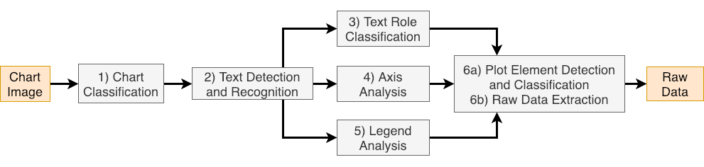
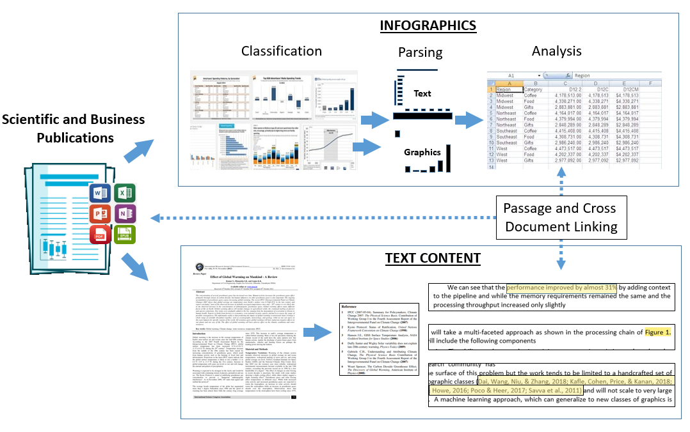

Research Projects
Chart Information Extraction
Colloborated with  Adobe
Adobe

The princple goal is to develop robust methods that could generally solve the chart information extraction problem from end to end, which is also called chart data reverse engineering. For such problem, it more or less consists of six tasks as figure showed above. Firstly we aim to extract the base skeleton of chart, which would be useful for later datapoint analysis within plot area, by focusing on first five tasks. UNet with offset prediction and Mask-RCNN with Graph Neural Network are adopted. In order to prompt general and robust performance of our method, more charts that meet real-world-data distribution are generated to increase the diversity of training datasets.
Intra- and Inter- Document Content (figures & references) linking and referencing
 Electronic documents are a significant way to store and spread information not only in daily usage but more importantly in scientific research realm. There are two type of association among the documents -- citation referencing among documents, and figure and sentence linking within each document. For first case, most citation retrieval systems for scientific paper are limited by treating the documents as an entire object rather than point out the specific part that each document is referencing to, while for another case, only sentences with direct indication like "in Fig. 1" are processed, however, lots of sentences without direct indication but an obvious declaration are not linked. In order to handle such issue and build relationship of text, figure and reference among scientific documents, ample consideration are put into it and base plan of datasets formation is set. Quantities of visual language model, which combine the techniques from both natural language processing and computer vision, are reviewed for future research.